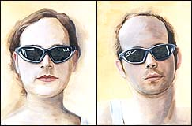

|  |  |  |  |  |
|
 (click here for simulation) |
 |
On the Surface in Kosovo 2 cotton canvas, acrylic paint & glow-in-the-dark powder 2004 collection Cultural Association of Zvecan These portraits of my friends, Hidde and Sylvia, were made from 21-31 August 2004 at the Sokolica Festival in Zvecan, Kosovo. With glow-in-the-dark paint in the lenses, you can see their eyes staring at you in the dark. |
|
At the final exhibition of paintings, it wasn't possible to set up an 'installation' space for these 'glow-in-the-dark' paintings, BUT, I knew that our electricity (and water) in Kosovo regularly disappeared.
So, I was very happy when the electricity momentarily went out during the opening. When someone turned on a flashlight, I saw two surprised guys pointing at these two paintings. They hadn't expected to see those eyes staring at them in the dark. Other paintings / installations using glow-in-the-dark-paint to create a layered experience: Geisha Masks White Wedding |